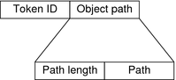

System Administration Guide: Security Services
|
||||||||||||||||||||||||||||||||||||||||||||||||||||||||||||||||||||||||||||||||||||||||||||||||||||||||||||||||||||||||||||||
|
1. Security Services (Overview) Part II System, File, and Device Security 2. Managing Machine Security (Overview) 3. Controlling Access to Systems (Tasks) 4. Virus Scanning Service (Tasks) 5. Controlling Access to Devices (Tasks) 6. Using the Basic Audit Reporting Tool (Tasks) 7. Controlling Access to Files (Tasks) Part III Roles, Rights Profiles, and Privileges 8. Using Roles and Privileges (Overview) 9. Using Role-Based Access Control (Tasks) 10. Role-Based Access Control (Reference) Part IV Solaris Cryptographic Services 13. Solaris Cryptographic Framework (Overview) 14. Solaris Cryptographic Framework (Tasks) 15. Solaris Key Management Framework Part V Authentication Services and Secure Communication 16. Using Authentication Services (Tasks) 19. Using Solaris Secure Shell (Tasks) 20. Solaris Secure Shell (Reference) 21. Introduction to the Kerberos Service 22. Planning for the Kerberos Service 23. Configuring the Kerberos Service (Tasks) 24. Kerberos Error Messages and Troubleshooting 25. Administering Kerberos Principals and Policies (Tasks) 26. Using Kerberos Applications (Tasks) 27. The Kerberos Service (Reference) 28. Solaris Auditing (Overview) 29. Planning for Solaris Auditing 30. Managing Solaris Auditing (Tasks) 31. Solaris Auditing (Reference) Files Used in the Auditing Service Rights Profiles for Administering Auditing |
Audit Token FormatsEach audit token has a token type identifier, which is followed by data that is specific to the token. Each token type has its own format. The following table shows the token names with a brief description of each token. Obsolete tokens are maintained for compatibility with previous Solaris releases. Table 31-4 Audit Tokens for Solaris Auditing
An audit record always begins with a header token. The header token indicates where the audit record begins in the audit trail. In the case of attributable events, the subject and the process tokens refer to the values of the process that caused the event. In the case of nonattributable events, the process token refers to the system. acl TokenThe acl token records information about Access Control Lists (ACLs). This token consists of four fixed fields:
The praudit command displays the acl token as follows: acl,jdoe,staff,0755 arbitrary Token (Obsolete)The arbitrary token encapsulates data for the audit trail. This token consists of four fixed fields and an array of data. The fixed fields are as follows:
The remainder of the token is composed of count of the specified type. The praudit command displays the arbitrary token as follows: arbitrary,decimal,int,1 42 The following table shows the possible values of the print format field. Table 31-5 Values for the arbitrary Token's Print Format Field
The following table shows the possible values of the item size field. Table 31-6 Values for the arbitrary Token's Item Size Field
arg TokenThe arg token contains information about the arguments to a system call: the argument number of the system call, the argument value, and an optional description. This token allows a 32-bit integer system-call argument in an audit record. The arg token has five fields:
The praudit command displays the arg token without the fourth field, as follows: argument,4,0xffbfe0ac,pri The praudit -x command includes the names of the fields that are displayed: <argument arg-num="4" value="0xffbfe0ac" desc="pri"/> attribute TokenThe attribute token contains information from the file vnode. This token has seven fields:
For further information about the file system ID and the device ID, see the statvfs(2) man page. The attribute token usually accompanies a path token. The attribute token is produced during path searches. If a path-search error occurs, there is no vnode available to obtain the necessary file information. Therefore, the attribute token is not included as part of the audit record. The praudit command displays the attribute token as follows: attribute,20666,root,root,247,4829,450971566127 cmd TokenThe cmd token records the list of arguments and the list of environment variables that are associated with a command. The cmd token contains the following fields:
The praudit command displays the cmd token as follows: cmd,argcnt,3,ls,-l,/etc,envcnt,0, exec_args TokenThe exec_args token records the arguments to an exec() system call. The exec_args token has two fixed fields:
The remainder of this token is composed of count strings. The praudit command displays the exec_args token as follows: exec_args,2,vi,/etc/security/audit_user Note - The exec_args token is output only when the argv audit policy option is active. exec_env TokenThe exec_env token records the current environment variables to an exec() system call. The exec_env token has two fixed fields:
The remainder of this token is composed of count strings. The praudit command displays the exec_env token as follows: exec_env,25, GROUP=staff,HOME=/export/home/jdoe,HOST=exm1,HOSTTYPE=sun4u,HZ=100, LC_COLLATE=en_US.ISO8859-1,LC_CTYPE=en_US.ISO8859-1,LC_MESSAGES=C, LC_MONETARY=en_US.ISO8859-1,LC_NUMERIC=en_US.ISO8859-1, LC_TIME=en_US.ISO8859-1,LOGNAME=jdoe,MACHTYPE=sparc, MAIL=/var/mail/jdoe,OSTYPE=solaris,PATH=/usr/sbin:/usr/bin,PS1=#, PWD=/var/audit,REMOTEHOST=192.168.13.5,SHELL=/usr/bin/csh,SHLVL=1, TERM=dtterm,TZ=US/Pacific,USER=jdoe,VENDOR=sun Note - The exec_env token is output only when the arge audit policy option is active. exit Token (Obsolete)The exit token records the exit status of a program. The exit token contains the following fields:
The praudit command displays the exit token as follows: exit,Error 0,0 file TokenThe file token is a special token that is generated by the auditd daemon. The token marks the beginning of a new audit file and the end of an old audit file as the old file is deactivated. The auditd daemon builds a special audit record that contains this token to “link” together successive audit files into one audit trail. The file token has four fields:
The praudit -x command shows the fields of the file token: file,2003-10-13 11:21:35.506 -07:00,
/var/audit/localhost/files/20031013175058.20031013182135.example1
group Token (Obsolete)This token has been replaced by the the groups token. See groups Token. groups TokenThe groups token replaces the group token. The groups token records the group entries from the process's credential. The groups token has two fixed fields:
The remainder of this token is composed of count group entries. The praudit command displays the groups token as follows: groups,staff,admin Note - The groups token is output only when the group audit policy option is active. header TokenThe header token is special in that it marks the beginning of an audit record. The header token combines with the trailer token to bracket all the other tokens in the record. The header token has eight fields:
On 64-bit systems, the header token is displayed with a 64-bit timestamp, in place of the 32-bit timestamp. The praudit command displays the header token for a ioctl() system call as follows: header,176,2,ioctl(2),fe,example1,2003-09-08 11:23:31.050 -07:00 The ID modifier field has the following flags defined: 0x4000 PAD_NOTATTR nonattributable event 0x8000 PAD_FAILURE failed audit event in_addr TokenThe in_addr token contains an Internet Protocol address. Since the Solaris 8 release, the Internet address can be displayed in IPv4 format or IPv6 format. The IPv4 address uses 4 bytes. The IPv6 address uses 1 byte to describe the address type, and 16 bytes to describe the address. The in_addr token has three fields:
The praudit command displays the in_addr token, without the second field, as follows: ip address,192.168.113.7 ip Token (Obsolete)The ip token contains a copy of an Internet Protocol header. The ip token has two fields:
The praudit command displays the ip token as follows: ip address,0.0.0.0 The IP header structure is defined in the /usr/include/netinet/ip.h file. ipc TokenThe ipc token contains the System V IPC message handle, semaphore handle, or shared-memory handle that is used by the caller to identify a particular IPC object. The ipc token has three fields:
Note - The IPC object identifiers violate the context-free nature of the Solaris audit tokens. No global “name” uniquely identifies IPC objects. Instead, IPC objects are identified by their handles. The handles are valid only during the time that the IPC objects are active. However, the identification of IPC objects should not be a problem. The System V IPC mechanisms are seldom used, and the mechanisms all share the same audit class. The following table shows the possible values for the IPC object type field. The values are defined in the /usr/include/bsm/audit.h file. Table 31-7 Values for the IPC Object Type Field
The praudit command displays the ipc token as follows: IPC,msg,3 ipc_perm TokenThe ipc_perm token contains a copy of the System V IPC access permissions. This token is added to audit records that are generated by IPC shared-memory events, IPC semaphore events, and IPC message events. The ipc_perm token has eight fields:
The praudit command displays the ipc_perm token as follows: IPC perm,root,sys,root,sys,0,0,0x00000000 The values are taken from the ipc_perm structure that is associated with the IPC object. iport TokenThe iport token contains the TCP or UDP port address. The iport token has two fields:
The praudit command displays the iport token as follows: ip port,0xf6d6 opaque Token (Obsolete)The opaque token contains unformatted data as a sequence of bytes. The opaque token has three fields:
The praudit command displays the opaque token as follows: opaque,12,0x4f5041515545204441544100 path TokenThe path token contains access path information for an object. This token contains the following fields:
The praudit command displays the path token, without the second field, as follows: path,/etc/security/audit_user The praudit -x command displays the path token as follows: <path>/etc/security/audit_user</path> The following figure shows the format of a path token. Figure 31-4 path Token Formatpath_attr TokenThe path_attr token contains access path information for an object. The access path specifies the sequence of attribute file objects below the path token object. Systems calls such as openat() access attribute files. For more information on attribute file objects, see the fsattr(5) man page. The path_attr token contains the following fields:
The praudit command displays the path_attr token as follows: path_attr,1,attr_file_name privilege TokenThe privilege token records the use of privileges on a process. The privilege token is not recorded for privileges in the basic set. If a privilege has been removed from the basic set by administrative action, then the use of that privilege is recorded. For more information on privileges, see Privileges (Overview) The privilege token contains the following fields:
The praudit command displays the privilege token as follows: privilege,effective, process TokenThe process token contains information about a user who is associated with a process, such as the recipient of a signal. The process token has nine fields:
The audit ID, user ID, group ID, process ID, and session ID are long instead of short. Note - The process token fields for the session ID, the real user ID, or the real group ID might be unavailable. The value is then set to -1. Any token that contains a terminal ID has several variations. The praudit command hides these variations. So, the terminal ID is handled the same way for any token that contains a terminal ID. The terminal ID is either an IP address and port number, or a device ID. A device ID, such as the serial port that is connected to a modem, can be zero. The terminal ID is specified in one of several formats. The terminal ID for device numbers is specified as follows:
In releases prior to the Solaris 8 release, the terminal ID for port numbers is specified as follows:
Since the Solaris 8 release, the terminal ID for port numbers is specified as follows:
The praudit command displays the process token as follows: process,root,root,sys,root,sys,0,0,0,0.0.0.0 The following figure shows the format of a process token. Figure 31-5 process Token Format
return TokenThe return token contains the return status of the system call (u_error) and the process return value (u_rval1). This token has three fields:
The return token is always returned as part of kernel-generated audit records for system calls. In application auditing, this token indicates exit status and other return values. The praudit command displays the return token for a system call as follows: return,failure: Operation now in progress,-1 The praudit -x command displays the return token as follows: <return errval="failure: Operation now in progress" retval="-1/"> sequence TokenThe sequence token contains a sequence number. This token is useful for debugging. The sequence token has two fields:
The sequence number is incremented every time an audit record is added to the audit trail. The praudit command displays the sequence token as follows: sequence,1292 The praudit -x command displays the sequence token as follows: <sequence seq-num="1292"/> Note - The sequence token is output only when the seq audit policy option is active. socket TokenThe socket token contains information that describes an Internet socket. In some instances, the token has four fields:
The praudit command displays this instance of the socket token as follows: socket,0x0002,0x83b1,localhost In most instances, the token has eight fields:
Since the Solaris 8 release, the Internet address can be displayed in IPv4 format or IPv6 format. The IPv4 address uses 4 bytes. The IPv6 address uses 1 byte to describe the address type, and 16 bytes to describe the address. The praudit command displays the socket token as follows: socket,0x0002,0x0002,0x83cf,example1,0x2383,server1.Subdomain.Domain.COM The praudit -x command describes the socket token fields. The lines are wrapped for display purposes. <socket sock_domain="0x0002" sock_type="0x0002" lport="0x83cf" laddr="example1" fport="0x2383" faddr="server1.Subdomain.Domain.COM"/> subject TokenThe subject token describes a user who performs or attempts to perform an operation. The format is the same as the process token. The subject token has nine fields:
The audit ID, user ID, group ID, process ID, and session ID are long instead of short. Note - The subject token fields for the session ID, the real user ID, or the real group ID might be unavailable. The value is then set to -1. Any token that contains a terminal ID has several variations. The praudit command hides these variations. So, the terminal ID is handled the same way for any token that contains a terminal ID. The terminal ID is either an IP address and port number, or a device ID. A device ID, such as the serial port that is connected to a modem, can be zero. The terminal ID is specified in one of several formats. The terminal ID for device numbers is specified as follows:
In releases prior to the Solaris 8 release, the terminal ID for port numbers is specified as follows:
Since the Solaris 8 release, the terminal ID for port numbers is specified as follows:
The subject token is always returned as part of kernel-generated audit records for system calls. The praudit command displays the subject token as follows: subject,jdoe,root,staff,root,staff,424,223,0 0 example1 The following figure shows the format of the subject token. Figure 31-6 subject Token Format
text TokenThe text token contains a text string. This token has three fields:
The praudit command displays the text token as follows: text,logout jdoe trailer TokenThe two tokens, header and trailer, are special in that they distinguish the end points of an audit record and bracket all the other tokens. A header token begins an audit record. A trailer token ends an audit record. The trailer token is an optional token. The trailer token is added as the last token of each record only when the trail audit policy option has been set. When an audit record is generated with trailers turned on, the auditreduce command can verify that the trailer correctly points back to the record header. The trailer token supports backward seeks of the audit trail. The trailer token has three fields:
The praudit command displays the trailer token, without the second field, as follows: trailer,136 uauth TokenThe uauth token records the use of authorization with a command or action. The uauth token contains the following fields:
The praudit command displays the uauth token as follows: use of authorization,solaris.admin.printer.delete zonename TokenThe zonename token records the zone in which the audit event occurred. The string “global” indicates audit events that occur in the global zone. The zonename token contains the following fields:
The praudit command displays the zonename token as follows: zonename,graphzone |
|||||||||||||||||||||||||||||||||||||||||||||||||||||||||||||||||||||||||||||||||||||||||||||||||||||||||||||||||||||||||||||
|